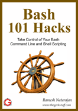

The debootstrap utility installs a very minimal Debian system. debootstrap tool will install debian-based Linux OS into a sub-directory. You don’t need an installation CD for this purpose. However, you need to have access to the corresponding Linux distribution repository (for e.g. Debian or Ubuntu).
For the purposes of this article we will discuss how to install Ubuntu using debootstrap.
1. Preparing your hard drive
You are going to need some spare hard disk space for this process. Partition your hard drive or use an external device (external HDD, USB key, etc.). To partition your hard drive you can use an Ubuntu live CD or the terminal. The latter is faster but the former is easier and if you have all your data under one partition then you won’t be able to unmount and resize it. That being said, the Ubuntu live CD is the tool that we will be using.
Make sure that your BIOS is set to boot from CD before your primary hard drive. Boot up the Ubuntu live CD and open the terminal (Accessories > Terminal). Type the following command.
$ sudo gparted&bg
This runs the gnome partition editor as root and puts the process in the background so you can continue using the terminal. From here you can modify your hard disk’s partition table as you see fit. You should only need about 5 GB of space but if you plan on using this as your main system then partition it accordingly. It is suggested that you make an ext3 or ext4 partition.
2. Mount Root Partition
Once you’re done partitioning exit the gparted program. Locate the Linux root partition for your current operating system and mount it using the following steps:
$ sudo mkdir /mnt/my_root && sudo mount -t ext3 /dev/sda1 /mnt/my_root
This long string of commands does the following.
- The mkdir program creates a new directory under /mnt called my_root. The double ampersands tells the shell to immediately execute the second command once the first one finishes.
- The second command runs the mount program as root. The -t argument specifies the filesystem type. I’m using ext3 but it will most likely be different for you.
- After specifying the filesystem type you have to point out the device/partition that you wish to mount, which is /dev/sda1 in my example. The last bit points out where the device/partition will be mounted.
3. Modify the fstab
Now we edit the /etc/fstab file of your current Linux OS so that once you exit the Live CD environment this partition will be automatically mounted. In the last example we mounted the root partition to /mnt/my_root so we are going to change the current working directory like so:
$ cd /mnt/my_root
Use the ls command to list the contents of the partition. You should see all the usual directories that you’d find in a UNIX or UNIX-like operating system (etc, bin, boot, mnt, and so on). Now we must make a directory for our newly created linux partition to be mounted. You can name the directory whatever you want. Just remember it because you’ll need it shortly.
$ mkdir mnt/min_buntu
Next change the working directory to etc.
$ cd /mnt/my_root/etc && pwd
The pwd command should spit out something like /mnt/my_root/etc/. Otherwise you’ve done something wrong. Now we edit the fstab!
$ sudo gedit fstab&bg
This opens the fstab with the Gnome text editor as root. Now you may edit it. If you are unfamiliar with editing the fstab, I’ll give a quick tutorial since there are an enormous amount of tutorials online.
The fstab contains information about the filesystems on your machine. Each fstab entry is of the form:
For example, I have my FreeBSD root partition in the fstab as:
/dev/sda5 /mnt/FreeBSD/rewt ufs ro,ufstype=ufs2,noatime 0 0.
If one were to read that out it would sound something like the following. The filesystem located at /dev/sda5 is to be mounted at /mnt/FreeBSD/rewt. The filesystem type is ufs and the options are read only, ufstype=ufs2, and noatime. You can pretty much just copy and paste the first entry in the fstab, which is usually the root partition, but make sure to change the UUID.
The below command should give the UUID of all the partitions on your hard disk. Use it if needed.
$ blkid
Ok! So far we’ve created a new partition for our minimal ubuntu install and added the appropriate entry in the fstab. Now its time to boot to boot back into Ubuntu.
4. Installing the appropriate packages and bootstrapping
If you don’t have debootstrap already installed then do so now.
$ sudo apt-get install debootstrap && sudo apt-get install build-essential
Now you’re ready to begin bootstrapping a minimal ubuntu install. Debootstrap is generally used in the following form:
$ debootstrap --arch $ARCH $RELEASE $DIR $MIRROR
In the above debootstrap syntax,
- $ARCH is whatever architecture you’re using (i386, amd64, sparc, etc.),
- $RELEASE is the Ubuntu release you want to use such as edgy, gutsy, or hardy,
- $DIR is the directory that you’ll be bootstrapping to and
- $MIRROR should be http://archive.ubuntu.com/ubuntu.
- Use a different $MIRROR and different $RELEASE if you’re bootstrapping a Debian system.
Based on the above syntax, following is a debootstrap example:
$ debootstrap --arch i386 gutsy /mnt/min_buntu http://archive.ubuntu.com/ubuntu
5. Making your new Ubuntu install usable
Once the debootstrap command finishes doing its thing, you need to chroot into your newly created minimal Ubuntu install.
$ chroot /mnt/min_buntu /bin/bash
Now that you’re chrooted into this very minimal Ubuntu install, you must create the fstab. Before you continue run these commands. Once you have finished creating the fstab run the second command to mount all filesystems listed in the /etc/fstab. Create the fstab using the builtin editor command. If you are more comfortable using vi or nano then by all means do so!
$ editor /etc/fstab $ sudo mount -t proc proc /proc && sudo mount -t sysfs sysfs /sys $ sudo mount -a
Now you have to edit/create /etc/network/interfaces, /etc/resolv.conf, /etc/hostname and /etc/hosts to get the network working properly. There are examples in /usr/share/doc/ifupdown/examples. You can also learn more about these files by using the “man” and “apropos” commands.
$ man interfaces $ man resolv.conf $ man hostname $ man hosts
After you get these files edited properly there are still a few more crucial steps to take. Don’t worry, you’re almost home free.
6. Installing the Linux kernel, adding users, and the sudoers file
You must install a kernel. Use “apt-cache search linux-image” to find the appropriate kernel and then install it using “apt-get install”. Refer to our earlier Manage packages using apt commands for more details on apt-* commands.
$ apt-cache search linux-image $ apt-get install
Now you’re ready to add users and groups. First add an administrative group and then add your user. Don’t forget to set passwords, either!
$ addgroup --system admin $ useradd -s /bin/bash -g admin -m -k /dev/null user $ passwd root $ passwd user
Now we modify the sudoers file so that anyone in the admin group can get root privileges. It is safe to use the visudo command because it checks for syntax. However, advanced users may not really care either way. Here is an excerpt from my sudoers.
Defaults env_reset,insults,timestamp_timeout=0 %admin ALL=(ALL) ALL
These basically mean that the sudo command will always ask you for your password (more secure), it will insult you when you type the password incorrectly, and any environment variables will be reset when using sudo. Depending on your needs you may want to keep env_reset or change it to env_keep.
Ok, now you’re ready to install whatever packages you want on your machine. I would highly suggest build-essential and would advise against huge metapackages like ubuntu-desktop. I prefer my box to be as lightweight as possible.
Congratulations! You’ve survived this long but well deserved journey. Remember that tweaking your operating system can be fun.
If you enjoyed this article, you might also like..

|  |

|

|

|
{ 4 comments… add one }
wont installing an ubuntu server edition with chosen packages do the same?
Hi, great post.
However, I’m not sure why you recommend playing with the disk layout from an alternative system (here a live CD); as long as one doesn’t intend to touch its currently mounted root partition, everything should be possible. The fstab isn’t locked either, it’s just read at boot time, so it really isn’t a problem. It can be misleading.
@Sajesh
I haven’t tested it, but I’m pretty sure their server edition does way more than that.
@Sajesh: Actually, no. Installing Ubuntu Server Edition will install packages that tailor the install to servers. This process is actually closer to doing a minimal install.
@thib: My reasoning for suggesting the use of a live CD is because the average user has the root partition encompassing the entire disk. If I recall correctly, a vanilla Ubuntu install follows this behavior. To be honest, if someone knows that they can have a seperate / and /home they’re more likely to come to the same conclusion that you did.
Isn’t that “.” at the end of the fstab example a typo?